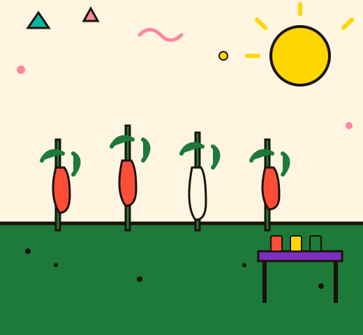
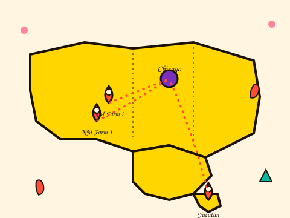

It Started With a Pepper Plant and a Dare
The honest, slightly embarrassing story of how Lava Mouth went from a backyard garden to a bottle on your shelf.

A Garden, a Blender, and a Very Unhappy Neighbor.
In 2018, founder Dani Reyes planted a single row of ghost peppers in her Chicago apartment's community garden plot. By August, she had more peppers than she knew what to do with. By September, she had a blender, a dozen mason jars, and a sauce that her neighbors described as "aggressively good" and "slightly dangerous." By December, she was selling out of a folding table at the Logan Square Farmers Market every Saturday. Nobody was more surprised than Dani.
Lava Mouth wasn't planned. It was grown. The early sauces were made in a rented commercial kitchen from midnight to 4am, labeled by hand at the kitchen table, and sold from the back of a hatchback. Every batch was an experiment. Most were brilliant. A few were spectacular failures that have been sworn to secrecy.
The name came from Dani's nephew, who tried the original ghost pepper sauce at age nine and announced — with tears streaming down his face — that his mouth felt like lava. He asked for more. The name stuck.
From Mason Jars to Shelves Nationwide
First ghost pepper harvest. First batch. First farmers market table. First completely accidental business.
Moved to a licensed commercial kitchen. Launched Serrano Verde and Smoky Diablo. First 10 local stockists.
Farmers markets closed. Online sales launched. Discovered that the internet also loves hot sauce.
First regional grocery placement. 25 stockists. Mango Inferno launched and immediately became the best-selling sauce.
Hired first two full-time employees. Moved to a dedicated production facility. Still making every batch by hand.
85+ stockists. 40,000+ bottles sold. Six sauces in the permanent lineup. Still small-batch. Always will be.
Flavor First. Heat Second. Always Small-Batch.
A lot of hot sauce brands are in the business of pain. We're in the business of flavor. The heat is real — sometimes brutally so — but every Lava Mouth sauce is built around a flavor profile first. The pepper comes second. That's the rule Dani set in 2018 and it hasn't changed.

Small-batch isn't a marketing phrase for us. It's a hard cap. Every run is 500 bottles or fewer. That means we can adjust recipes based on how the peppers are tasting that season. It means we can try new things without betting the whole company on them. It means every bottle you open is the result of someone's actual attention, not a formula running on autopilot.
We source our peppers from three family farms — two in New Mexico, one in the Yucatán. We've worked with the same growers since year one. When the harvest is good, the sauce is extraordinary. When it's a tough season, we adjust. That's the deal.
Come Find Your Sauce
The story's great, but the sauce is better. Go find the one that's yours.